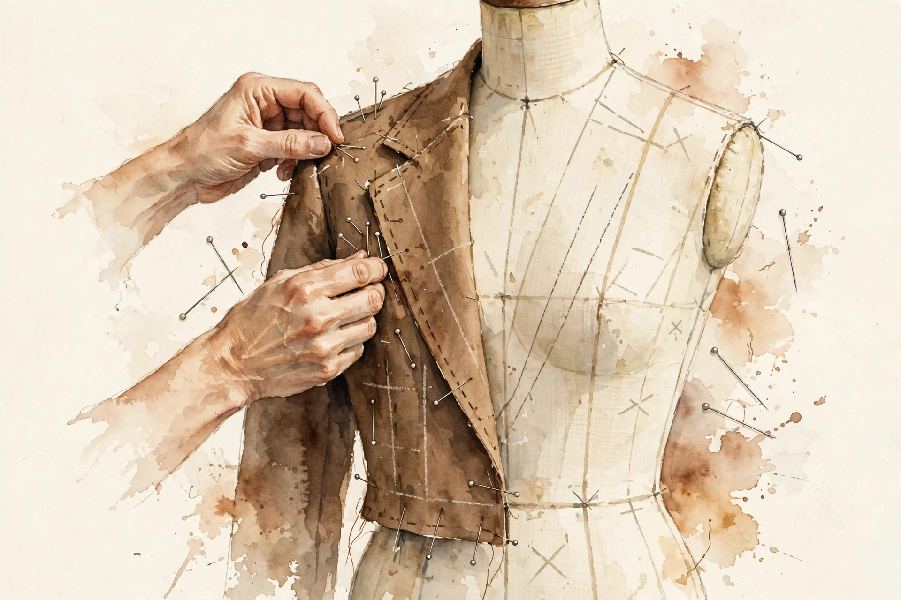

Companion · narrated from the lesson document
Between pretraining and post-training sits midtraining, and after it the supervised tune. This companion walks the adaptation unit: stage boundaries, long-context adaptation, conversation templates, loss masks, instruction traces, tool-call data, data quality, packing, LoRA, forgetting, eval slices, and checkpoint compatibility.
From the lesson The idea, and every number beside it, comes from the cited section of u15_midtraining.md. The phrasing is the companion's.
Illustration Invented by the companion: an analogy, a toy with made-up values, or a what-if. Never lecture content.
companion Companion voice: the idea above the tag is from the lesson. The generalization below it is the companion's.
Provenance: no full lecture transcript exists for this session. The page narrates the lesson document content/v2/cs336/lessons/u15_midtraining.md, not a video. Claim class: REQUESTED-BRANCH. Standing note: no model was trained on the lesson's build box. Adaptation claims are arithmetic on synthetic toys from visuals/compute_u15.py, executed 2026-10-06. Every number carries the lesson section that reports it.

Section 1 · Remediation
From the lessonRemediation
Supervised fine-tuning trains on (prompt, response) pairs but computes loss only on the response tokens. The lesson's toy from compute_u15.py: in synthetic conversations, system 0.17, user 0.34, assistant 0.49 of tokens. Per 1M tokens, 492,356 carry supervision. The model learns to produce responses, not to predict prompts. Half the tokens are context the model reads. Half are the behavior it must learn. That split drives the masking section (C04) and the packing section (C08).
visuals/compute_u15.py (executed 2026-10-06).From the lessonRemediation, C04 §5 Supervision toy. Supervised tokens = total × assistant fraction.
Total tokens (M) Assistant fraction
Press the button.
At the defaults: about 490k tokens. The lesson's exact toy count is 492,356 per 1M (C04 §6).
SFT teaches responses, not prompts. 492,356 of 1M toy tokens carry loss.
Section 2 · C01, C02
From the lessonC01 §2, §6
The base model is done, but it needs longer context and new data. Is that post-training? Midtraining: continued pretraining on a new data mix (often longer context, new domains) with the pretraining objective, before any instruction tuning. Pretraining builds the base. Midtraining adapts the base: new context length, new knowledge cutoff, new domains. Post-training (SFT, RL) teaches behavior. Different objectives, different data, different evals. The objective function and the data mix define the stage, not the calendar date. The lesson's toy ledger: pretrain 5.88e21 FLOPs, midtrain 10 percent more on long-context data, SFT 1 percent on instructions. The FLOP ratios mark the stages. The failure case: midtraining on narrow data with the full pretraining LR. The model forgets the broad distribution (C10). The assumption "more training only helps" breaks. Lower the LR and mix in base data.
From the lessonC02 §2, §5, §6
The model was trained at 4k context, you need 128k. What changes? RoPE encodes position as rotation. The slowest dimension sets the longest distance the model can distinguish. Raising theta stretches the ruler. Then train on long documents so the model learns to use the new range. The RoPE angle for dimension pair i is pos / theta^{2i/d}. The i=0 pair has wavelength 2*pi*theta. Longer wavelength means positions further apart stay distinguishable. The lesson's run, executed 2026-10-06: RoPE theta 1e4 to 5e5 moves the slowest wavelength from 6.28e4 to 3.14e6, ratio 50x. Long-context training is quadratic in attention (U07). Data with real long-range dependencies is scarce. The failure case: theta raised but no long training data. The model has the ruler but never learned to read it. The assumption "theta is enough" breaks. Train on long documents.
From the lessonC02 §5 Wavelength toy. Slowest RoPE wavelength = 2 × pi × theta.
Theta
Press the button.
At theta 1e4: 6.28e4. At 5e5: 3.14e6, ratio 50x, matching C02 §6.
The objective and the data mix define the stage, not the calendar date.
Stretch the ruler, then learn to read it. Theta without long data is an unread ruler.
Section 3 · C03, C04
From the lessonC03 §2, §5, §6
The raw data is (user, assistant) pairs. What does the model actually see? A template: system header, turn markers, role tags. The exact bytes must match between training and inference. The template is a protocol both sides speak. Train on template A, serve with template B, and the model reads the conversation as gibberish roles. Special tokens mark roles. The loss mask (C04) uses the same boundaries. Template tokens consume context (17 percent system in the toy). Verbose templates tax every request. The failure case: the serving template drifts from training (U11-C09). Role confusion: the model answers as the user. The assumption "templates match" breaks. Version and test.
From the lessonC04 §2, §5, §6
Should the model learn to predict the user's prompt? No: mask it. The mask is a binary switch per token: 1 for tokens the model should learn to generate, 0 for context it only reads. SFT sets 1 on assistant tokens. Loss = mean over masked tokens of -log p. Unmasked tokens contribute nothing to the gradient. The lesson's run, executed 2026-10-06: assistant fraction 0.49, so 492,356 of 1M tokens carry loss. Masking throws away half the tokens' signal. Unmasked pretraining-style loss on prompts teaches prompt prediction, usually unwanted. The failure case: the mask includes the system prompt by bug. The model learns to emit system instructions. The assumption "the mask is right" breaks. Unit-test the mask on fixtures.
The template is a protocol both sides speak. Exact bytes must match between training and inference.
The mask decides what the model learns. A buggy mask teaches the model to emit system instructions.
Section 4 · C05
From the lessonC05 §2, §5, §6
1M instruction pairs exist. Are they all worth training on? Quality axes: correctness of the response, difficulty (not trivial, not impossible), diversity of tasks, cleanliness of format. SFT teaches behavior by example. Bad examples teach bad behavior confidently. A small clean set beats a large noisy one. Filter by the axes, dedup near-identical prompts, balance task types. The lesson's toy funnel: 1M pairs, correctness filter keeps 600k, difficulty filter keeps 300k, dedup keeps 250k. The funnel is the product of the axes. Curation costs annotation or strong-model grading. Skipping it costs behavior quality. The failure case: the grader is the same weak model being trained. It keeps what it already likes. The assumption "the grader is better" breaks. Use a stronger grader or humans.
A small clean set beats a large noisy one. 1M pairs funnel to 250k.
Section 5 · C06, C07
From the lessonC06 §2, §5, §6
How does the model learn JSON tool calls? Traces interleave assistant text, tool calls (JSON), and tool results. The mask covers the assistant's tool calls, not the tool's returned text. The tool result is environment observation, like a user message: read it, do not learn to emit it. The call itself is the behavior being taught. Mask = 1 on assistant tokens including the call JSON, 0 on tool-result tokens. The lesson's toy trace: 200 tokens, 60 call JSON (masked 1), 80 result text (masked 0), 60 prose (masked 1). Supervised: 120. Bad traces teach bad calls. Trace validation (schema check, execution check) is the real cost. The failure case: tool results contain injected instructions. The model learns to obey them because they look like assistant text. The assumption "mask 0 is enough" breaks when results leak into the call. The security boundary needs design (P21).
From the lessonC07 §2, §5, §6
Does the U14 filtering story change for SFT? The axes change (correctness matters more than volume), but the machinery is the same: score, threshold, audit. SFT data is small and precious: each example is seen many times. One bad example repeated 100x is 100 bad lessons. Quality bars rise as data shrinks. Effective exposure = keep count x epochs. The quality bar scales with exposure. The lesson's toy: 250k kept pairs, 3 epochs: 750k exposures. A 1 percent bad rate means 7,500 bad lessons. Human review of the full set is ideal and unaffordable. Review the failures and the boundary. The failure case: near-dup prompts with contradictory answers. The model learns inconsistency. The assumption "dedup is enough" breaks. Check answer agreement within dup clusters.
Section 6 · C08
From the lessonC08 §2, §5, §6
Sequences run 64 to 2048 tokens, the batch is 2048. How much compute is pad? Padding pays for nothing. Packing concatenates short sequences into full bins and masks attention at the boundaries so sequences never see each other. Waste_pad = (T*n - sum)/(T*n). Packing is bin-packing (NP-hard). Greedy by descending length is the practical choice. The attention mask blocks cross-document attention. The lesson's run, executed 2026-10-06: 512 sequences, pad-to-2048 waste 47.6 percent, greedy packing into 2048-bins: 22.0 percent waste over 344 bins. Packing needs the boundary mask. A bug leaks context across documents (U13-C06). The failure case: the mask is wrong and documents attend to each other. The model learns spurious cross-document links. The assumption "the mask is right" breaks. Test it with canary tokens.
visuals/compute_u15.py (executed 2026-10-06).Section 7 · C09
From the lessonC09 §2, §5, §6
Full SFT updates 7B params. LoRA updates how many? LoRA freezes W and learns a low-rank delta BA. The update lives in a small subspace: cheap to store, fast to swap, limited in expressivity. Params per pair = 2dr. Forward: Wx + BAx. Only A,B get gradients. W stays frozen. The lesson's run, executed 2026-10-06: d=4096, r=16. One adapted pair is 131,072 params against 16,777,216 full (0.78 percent). Adapting q and v in all 32 layers: 8.39M against 1074M. Rank caps what the adapter can learn. Merging BA into W at inference removes the overhead. The failure case: the task needs a big distribution shift (new language). Rank 16 cannot carry it and underperforms full tuning badly. The assumption "small delta suffices" breaks. Raise r or go full.
visuals/compute_u15.py (executed 2026-10-06).From the lessonC09 §5 LoRA toy. Params per adapted pair = 2 × d × r.
d r
Press the button.
At the defaults: 131,072 params, 0.78 percent of the full 16,777,216, matching C09 §6.
Rank caps what the adapter can learn. 0.78 percent of params for small deltas. Raise r or go full for big shifts.
Section 8 · C10, C11
From the lessonC10 §2, §5, §6
After midtraining, is the base capability intact? New gradients overwrite old knowledge. Forgetting is measured, not assumed: track base evals through the run. Mitigations: replay base data, lower LR, freeze parts. The lesson's run on synthetic deltas, executed 2026-10-06: old-task loss rises [0.05, 0.12, 0.30, 0.28, 0.10, 0.06] across 6 checkpoints, mean 0.15 nats. Replay costs base-data tokens in the mix. Lower LR slows adaptation. The failure case: forgetting is silent on untested capabilities. The suite looks fine, users find the hole. The assumption "the suite covers everything" breaks. Keep the suite broad.
From the lessonC11 §2, §5, §6
SFT improved the chat score but did pretraining knowledge survive? Slices: base knowledge (pretrain), long-context (midtraining), instruction following (SFT). Each stage owns slices that must not regress. One suite per stage, run at every checkpoint. A stage's success is its slices rising without others falling. The lesson's toy: after SFT, instruction slice plus 0.10, base slice minus 0.02 (inside CI), long-context flat. SFT did its job without damage. Running all suites at every checkpoint costs eval compute. Sample checkpoints for the expensive suites. The failure case: slices overlap in what they test. "Instruction following" items also test base knowledge. The assumption "slices are pure" breaks. Read cross-slice patterns.
Forgetting is measured, not assumed. Track base evals at every checkpoint: mean rise 0.15 nats on the toy.
Section 9 · C12
From the lessonC12 §2, §5, §6
Can SFT resume from the midtraining checkpoint? Yes if the checkpoint holds weights, optimizer state, RNG, and data position. A checkpoint is the full training state, not just weights. Optimizer moments, RNG, and loader position decide whether the resume is exact. States = N x (4 param + 4 m + 4 v) bytes. Dropping moments is a warm restart, not a resume. The lesson's run, executed 2026-10-06: AdamW fp32 states for 7B are 84.0 GB. bf16 params alone 14.0 GB. Full states cost 6x the weights in storage and transfer. Sharded checkpoints (U08) split the bill. The failure case: architecture change between stages (new head). Shapes mismatch and the load fails. The assumption "shapes match" breaks. Write a conversion map.
visuals/compute_u15.py (executed 2026-10-06).Section 10 · Synthesis
From the lesson The arc, end to end. SFT computes loss on response tokens only: 492,356 of 1M (remediation). The objective and data mix define the stage (C01). Theta stretches the ruler. Long data teaches reading it (C02). The template is a protocol. The mask is the curriculum (C03, C04). A small clean set beats a large noisy one (C05). Tool calls are masked. Tool results are read (C06). Quality bars rise as data shrinks (C07). Packing beats padding 22.0 to 47.6 (C08). LoRA learns a low-rank delta at 0.78 percent of params (C09). Forgetting is measured at every checkpoint (C10). Each stage owns slices that must not regress (C11). A checkpoint is the full training state: 84.0 GB, not 14.0 (C12).
From the lesson Where the unit points next, in the lesson's own forward links: U03 supplies RoPE. U05 supplies optimizer states. U07 supplies the attention cost of long context. U08 supplies sharded checkpoints. U11 supplies the template-drift warning. U12 supplies eval slices. U13 supplies document boundaries. U14 supplies the quality filtering machinery. U16 supplies RL on tool use.
Wisdom index
Each nugget states the idea in plain words, why it matters, and the transferable principle. Every one is anchored to its lesson section.